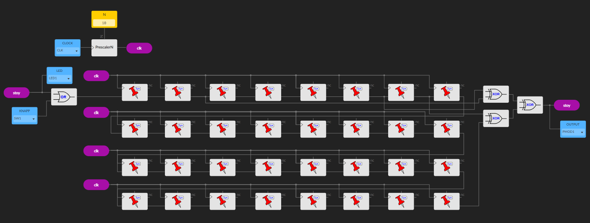
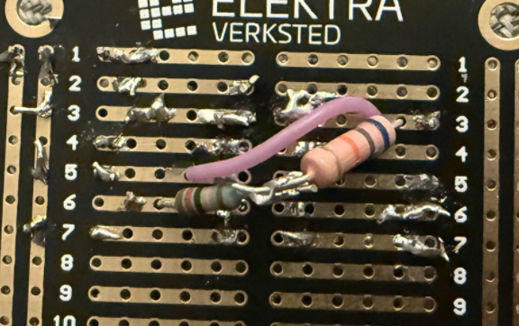

From noise to tone
Generate white noise digitally on an FPGA, then band-pass it sharply enough in the analog domain that the output sounds like a tone instead of a hiss. Digital side: a Linear Feedback Shift Register on a Lattice ICE40HX1K. Analog side: a Delyiannis-Friend active band-pass on a soldered veroboard.
The noise generator
A Linear Feedback Shift Register (LFSR) is a shift register whose input is an
XOR of a few selected taps. If the taps are chosen by a primitive polynomial,
the register produces a maximum-length pseudo-random sequence of length
2L − 1 before repeating. This is a so-called m-sequence,
whose autocorrelation properties make it look like white noise on the relevant
time scale.
Built in IceStudio with a button on the dev board feeding the reset line, so a button-press kicks the register out of any all-zeros lock-up state. The FPGA output is a 3.3 V pulse stream, effectively a 1-bit DAC, passed through a passive RC lowpass to take the worst of the switching edges off.


The Delyiannis-Friend filter
A single-op-amp active band-pass topology that gets high Q with a small
component count. Design centre f₀ = 920 Hz, Q = 12.
Component-value formulas:
R₃ = 1 / (πBC)
R₁ = R₃ / (2H₀)
R₂ = R₃ / (4Q² − 2H₀)With C = 22 nF, the ideal values worked out to R₃ ≈ 189 kΩ, R₁ ≈ 18.9 kΩ, R₂ ≈ 333 Ω. Realised as series combinations of stock resistors (120 k + 68 k, 12 k + 6.8 k).


Measured vs designed
- Centre frequency: 958 Hz measured (920 Hz design). About 4% high.
- Q-factor: 6.6 measured (12 design). Significant drop.
The Q drop is the headline failure mode. Three plausible culprits: capacitor tolerances at this frequency are 5%+ and dominate the band shape; the op-amp has finite gain-bandwidth at higher Q-factors and effectively rolls off the peak; and the breadboard / veroboard layout introduces stray capacitance and resistance in parallel with the design.
Despite the lower Q, the output FFT shows a clear spectral peak around f₀ and the listening test confirmed a recognisable tonal character. Mission accomplished, even if the bandwidth was wider than designed.